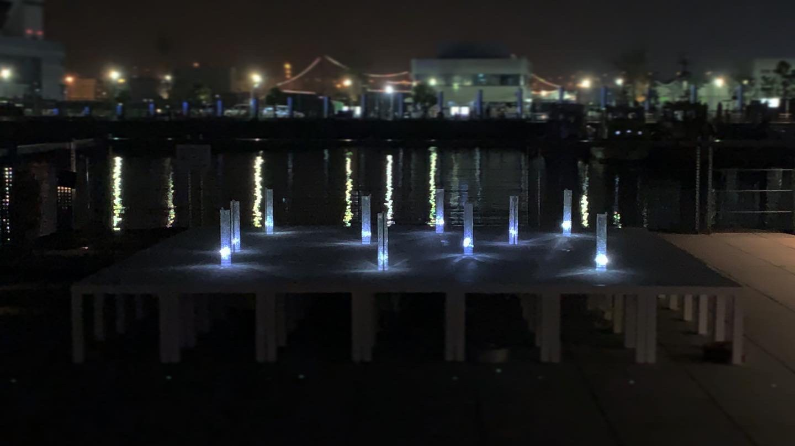
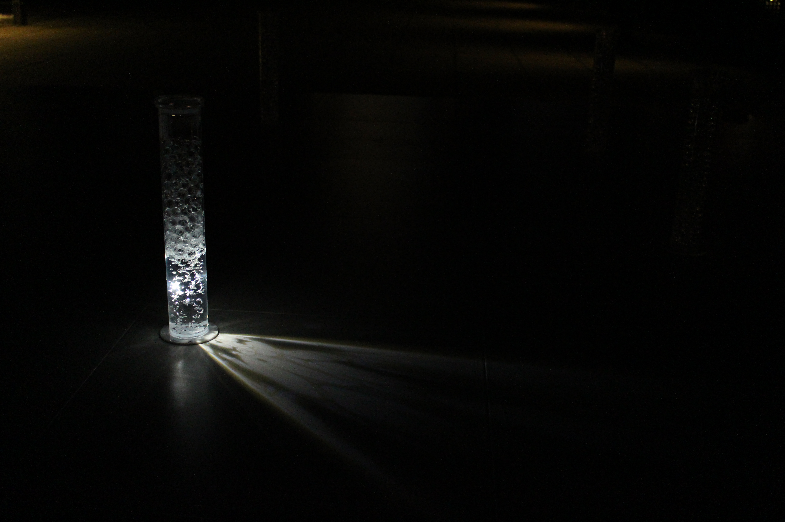

Waves
, An installation to create a dynamic lighting pattern
An installation to create a dynamic lighting patterns by a light source and a change of the objects reflected by them. A slight light source illuminates the inside of the cylinders stuffed clear pieces, changing the place or the strength, and then makes ‘Waves’ of light right here. In addition, water goes in and out inside the cylinders, so that ‘Waves’ on the liquid surface change the way to luminous-spread. The calculative and accidental luminous aspect seems that you watch a beauty of ocean produced by the relation between the sunshine or the light of cities and the wave surface.
光源とそれに照らされる物体の変化によって、その場に動的な光のパターンを生み出すインスタレーション。 透明の粒が詰まった円筒群に、小さな光源が位置や強さを変えながら内部を照らして動き、そこに光の「波」をつくります。また、筒の中では水の出入りが繰り返され、液面の「波」が光の広がり方を変化させていきます。 環境と物体の関係性の上に現れる計算的で偶発的な光の様相はまるで、⽇光や街の灯と波⾯の関係から⽣まれる海の美しさを眺めるようです。



Credit
Yasuaki Kakehi, Juri Fujii, Joung Min Han
Skill
Hardware, Design
Exhibition
Smart Illumination Yokohama